Left = the single fake render. Right = the full real Kloudbean dashboard flow from the support docs, in order, with captions. Generated 2026-09-05.
Each slot now maps to a step sequence, not one navigation shot. For a deep-dive article on a feature, the blog shows the whole flow; for a passing mention it uses the single lead image. 3 slots have no doc match (staging, cloudflare, cron-jobs) and are left as-is. add-server/env-vars get framework sequences; launch-database gets per-engine sequences.
Generic slot sequences
synthetic (1 image)
add-server
real sequence (2)
add-server
1. Choose cloud provider, application, datacenter, and server size
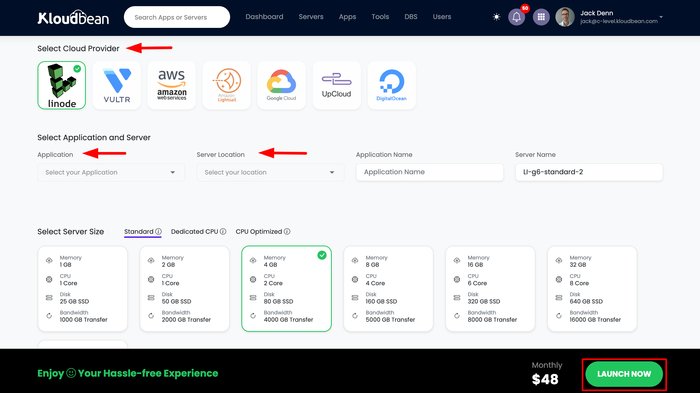
2. The server provisions with your full stack in a few minutes
lead (used for passing mentions): launch_server_step_1
synthetic (1 image)
add-server-region
real sequence (1)
add-server-region
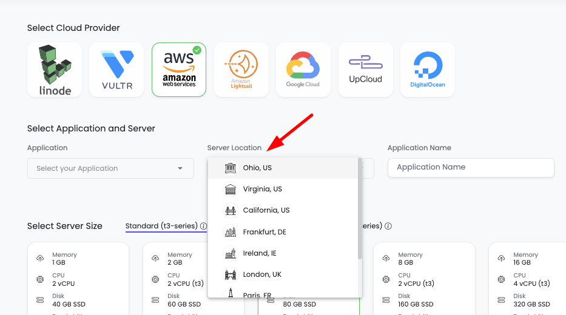
1. Pick the datacenter closest to your users
lead (used for passing mentions): selecting_server_location
synthetic (1 image)
dashboard
real sequence (1)
dashboard
1. The Kloudbean dashboard: servers, apps, and databases in one place
lead (used for passing mentions): dashboard
synthetic (1 image)
add-application
real sequence (2)
add-application
1. Add an application from the Applications page
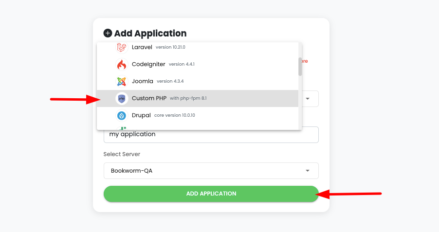
2. Pick the application type and the server to run it on
lead (used for passing mentions): adding_app_from_apps_step_1
synthetic (1 image)
launch-database
real sequence (3)
launch-database
1. Open Managed Databases and add a new database2. Choose the engine, size, and region
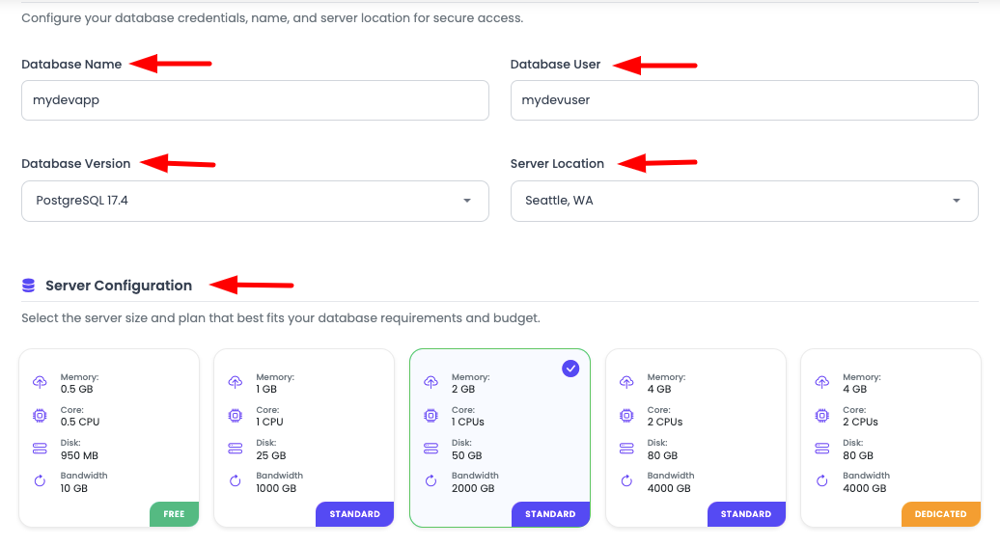
3. The managed database is created with its own host and SSL
lead (used for passing mentions): psql_launch_step_1
synthetic (1 image)
env-vars
real sequence (2)
env-vars
1. Open the Environment Variables editor in the console
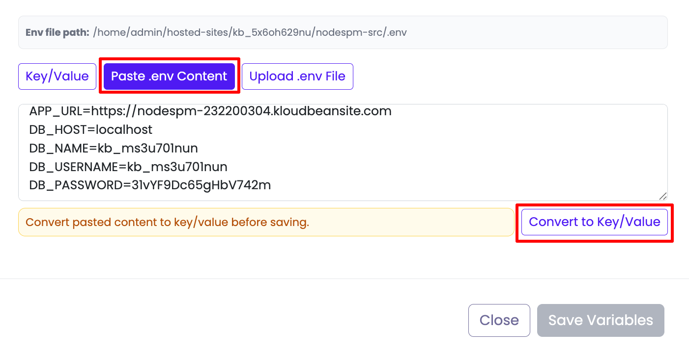
2. Paste your .env content, then convert to key/value
lead (used for passing mentions): nodespm_env_step_1
synthetic (1 image)
git-deployment
real sequence (4)
git-deployment
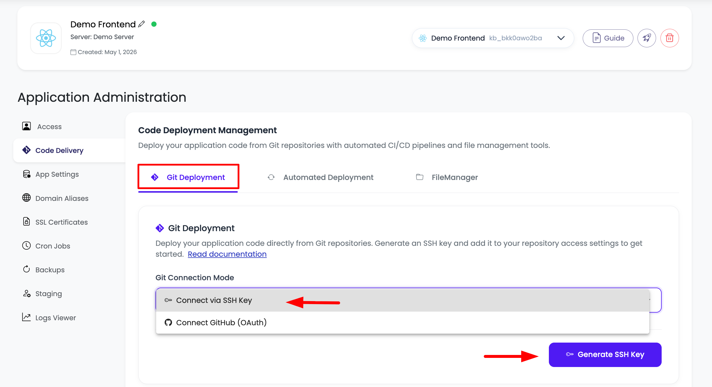
1. Open Code Delivery, Git deployment, and pick a connection mode2. Paste your repository URL and fetch branches
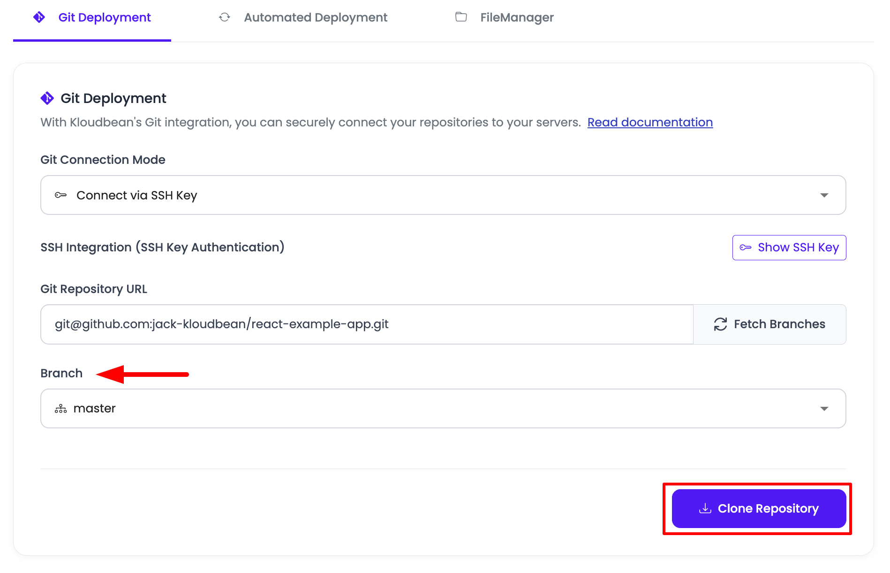
3. Select the branch and clone the repo to the app
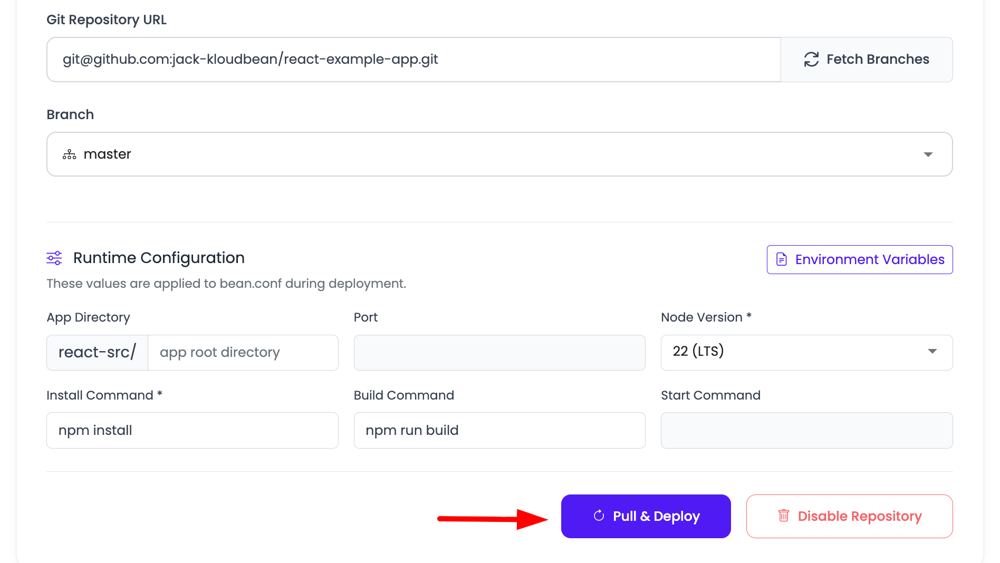
4. Pull and deploy: Kloudbean builds and ships the code
lead (used for passing mentions): git_connect_step_4
synthetic (1 image)
server-health
real sequence (3)
server-health
1. Open Server Health monitoring2. CPU, memory, and disk usage over time3. Per-service resource breakdown
lead (used for passing mentions): server_health_step_2
synthetic (1 image)
manage-backups
real sequence (3)
manage-backups
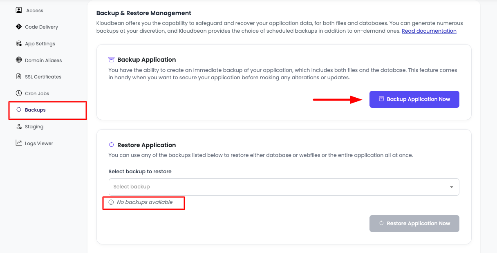
1. Open the application Backups tab2. Take an on-demand backup or set a schedule
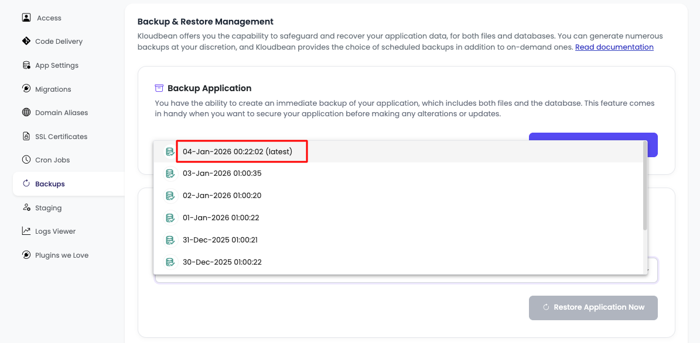
3. Restore from any listed restore point
lead (used for passing mentions): app_backup_step_2
synthetic (1 image)
flb-load-balancer
real sequence (3)
flb-load-balancer
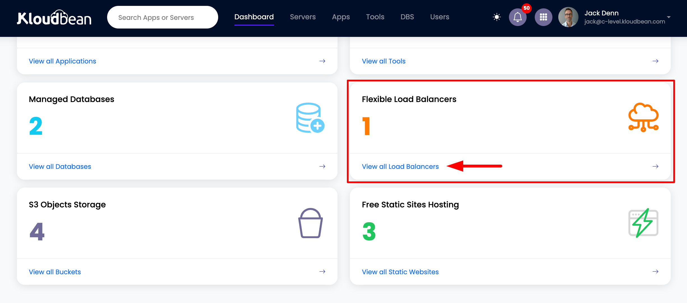
1. Launch a Flexible Load Balancer2. Configure the load balancer and its application pool
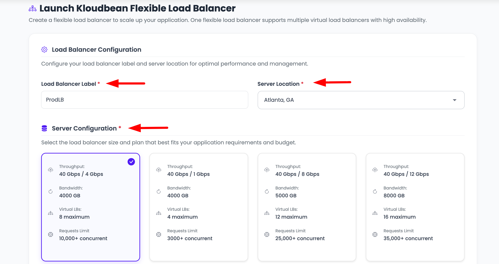
3. The load balancer is provisioned and fronting your app
lead (used for passing mentions): flb_launch_step_2
synthetic (1 image)
ssl-certificate
real sequence (3)
ssl-certificate
1. Open the SSL Certificate section2. Issue a free Let's Encrypt certificate for your domain3. The certificate is installed and active
lead (used for passing mentions): le_ssl_step_1
synthetic (1 image)
s3-buckets
real sequence (4)
s3-buckets
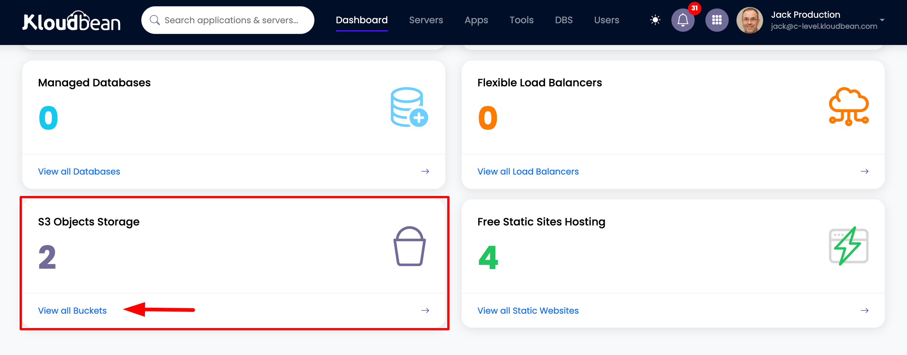
1. Open S3 Object Storage
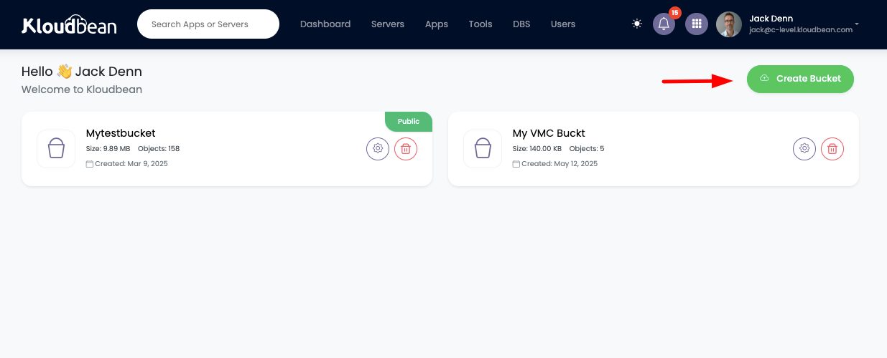
2. Create a new bucket3. Name the bucket and set its access
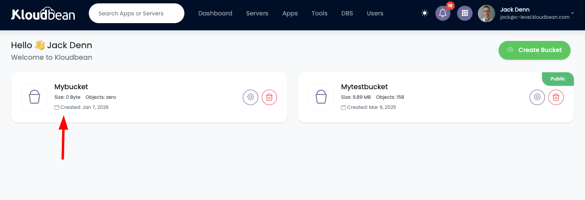
4. The bucket is ready for objects
lead (used for passing mentions): storage_bucket_step_3
synthetic (1 image)
firewall
real sequence (1)
firewall
1. Lock access down with IP allow-listing (CIDR)
lead (used for passing mentions): app_ip_whitelisting
synthetic (1 image)
subusers-uac
real sequence (3)
subusers-uac
1. Invite a team member from Team Management2. Set the member's overall access level3. Grant granular per-resource, per-action permissions
lead (used for passing mentions): uac_resources_access
synthetic (1 image)
user-2fa-security
real sequence (1)
user-2fa-security
1. Account security settings
lead (used for passing mentions): updating_account_password
synthetic (1 image)
staging
real sequence (2)
staging
1. Create a staging copy of your site from the Kloudbean dashboard2. Manage the staging environment and push changes to production
lead (used for passing mentions): staging_step_1
synthetic
cloudflare
no support doc — kept as-is
cloudflare
No matching Kloudbean doc screenshot. Left untouched. Flag if you have shots.
synthetic
cron-jobs
no support doc — kept as-is
cron-jobs
No matching Kloudbean doc screenshot. Left untouched. Flag if you have shots.
Framework overrides
nextjs
synthetic (1 image)
nextjs · add-server
real sequence (3)
nextjs · add-server
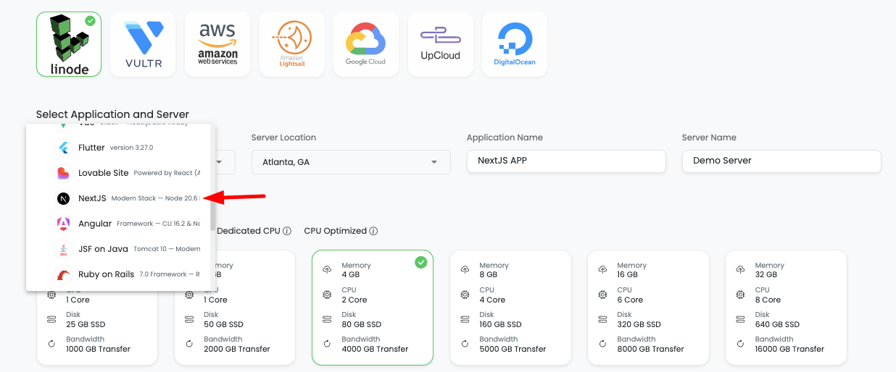
1. Select cloud, choose the nextjs application, datacenter, and size
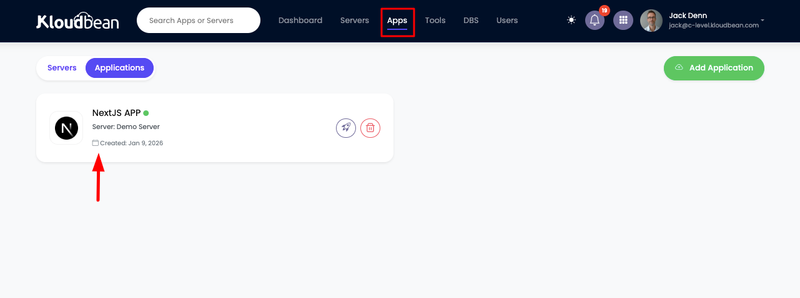
2. Name your application and server
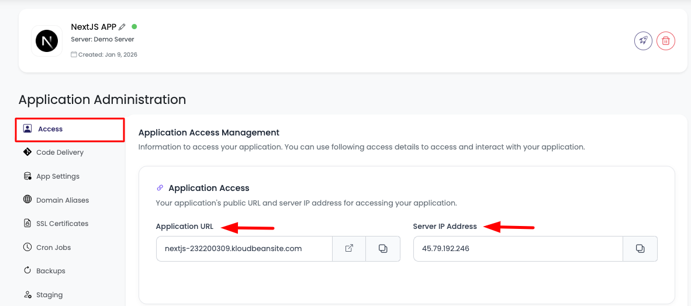
3. Launch; the server and nextjs stack provision in minutes
lead (used for passing mentions): nextjs_launch_step_1
synthetic (1 image)
nextjs · env-vars
real sequence (1)
nextjs · env-vars
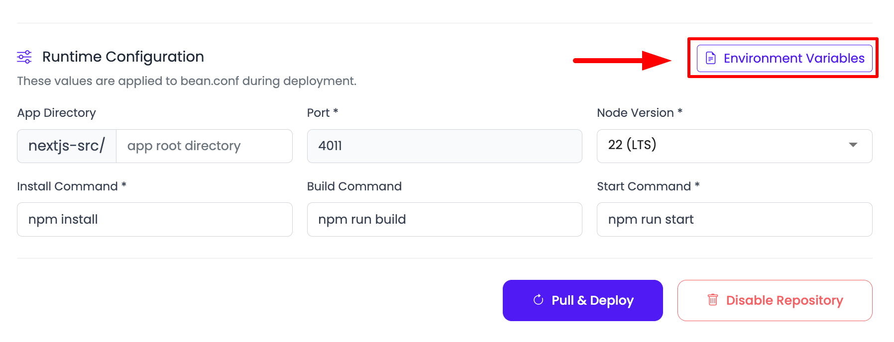
1. Open the Environment Variables editor in the console
lead (used for passing mentions): nextjs_env_step_1
node
synthetic (1 image)
node · add-server
real sequence (3)
node · add-server
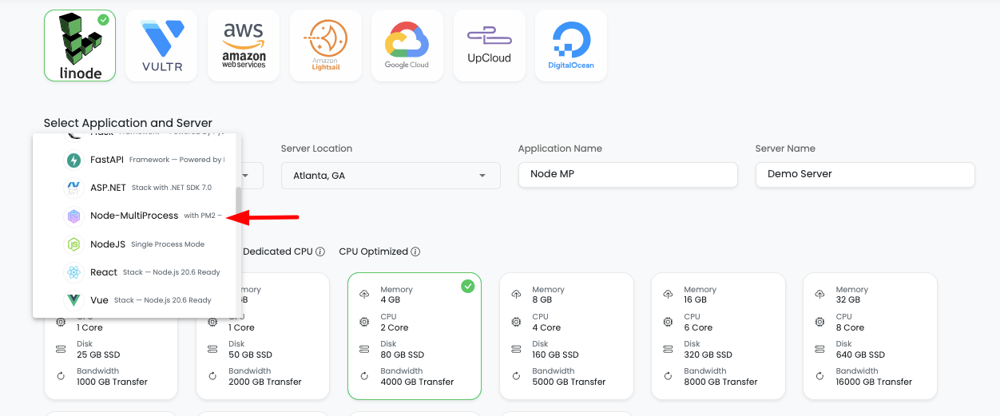
1. Select cloud, choose the node application, datacenter, and size
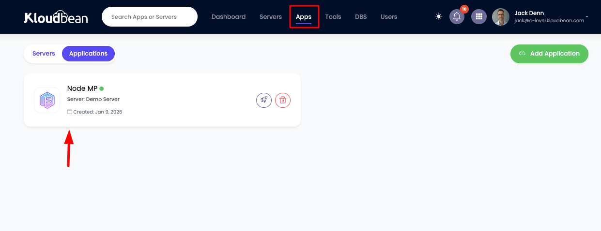
2. Name your application and server
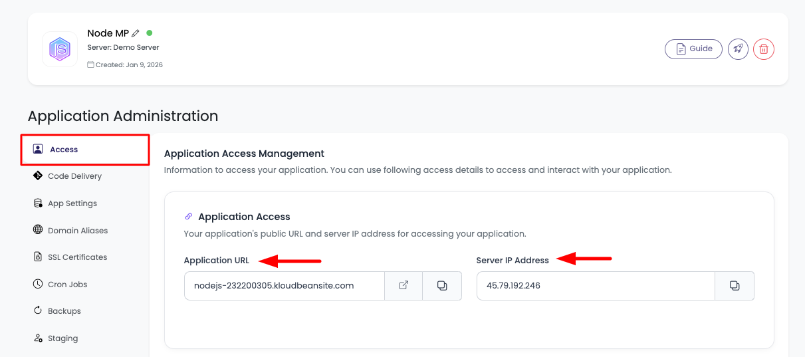
3. Launch; the server and node stack provision in minutes
lead (used for passing mentions): node_launch_step_1
synthetic (1 image)
node · env-vars
real sequence (1)
node · env-vars
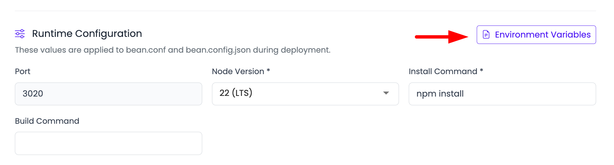
1. Open the Environment Variables editor in the console
lead (used for passing mentions): node_env_step_1
nodespm
synthetic (1 image)
nodespm · add-server
real sequence (3)
nodespm · add-server
1. Select cloud, choose the nodespm application, datacenter, and size2. Name your application and server
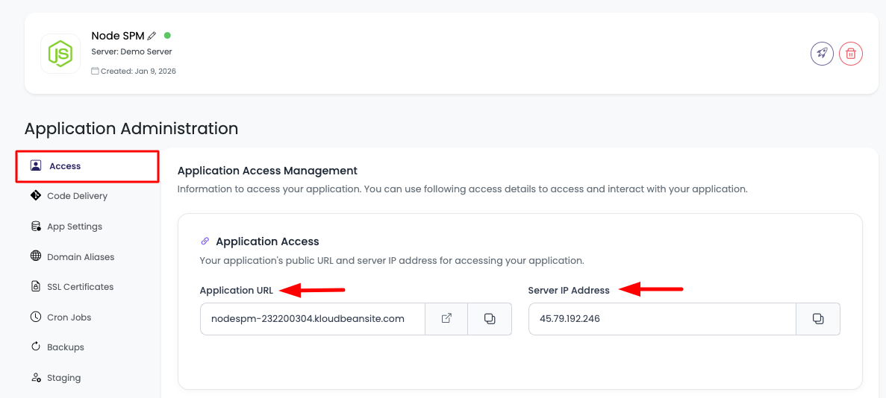
3. Launch; the server and nodespm stack provision in minutes
lead (used for passing mentions): nodespm_launch_step_1
synthetic (1 image)
nodespm · env-vars
real sequence (1)
nodespm · env-vars
1. Open the Environment Variables editor in the console
lead (used for passing mentions): nodespm_env_step_1
django
synthetic (1 image)
django · add-server
real sequence (3)
django · add-server
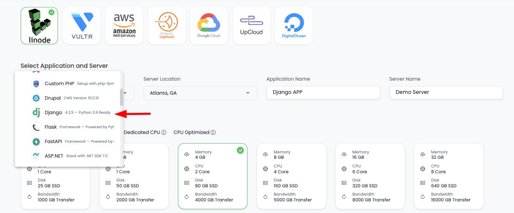
1. Select cloud, choose the django application, datacenter, and size
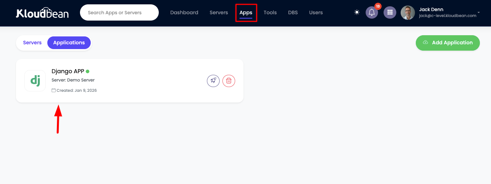
2. Name your application and server
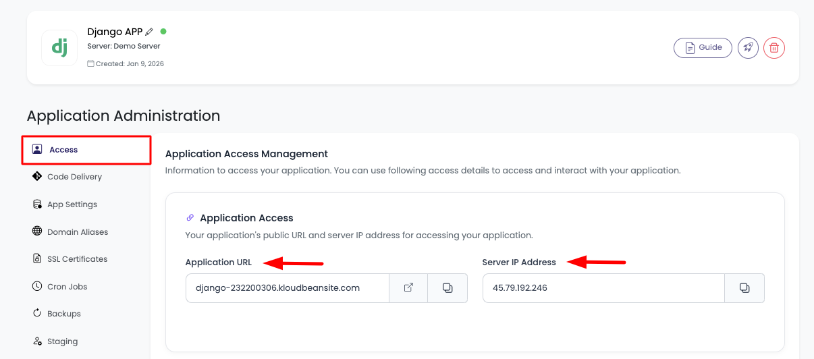
3. Launch; the server and django stack provision in minutes
lead (used for passing mentions): django_launch_step_1
synthetic (1 image)
django · env-vars
real sequence (1)
django · env-vars
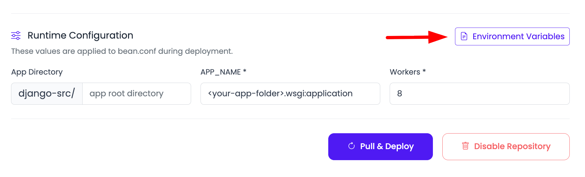
1. Open the Environment Variables editor in the console
lead (used for passing mentions): django_env_step_1
flask
synthetic (1 image)
flask · add-server
real sequence (3)
flask · add-server
1. Select cloud, choose the flask application, datacenter, and size
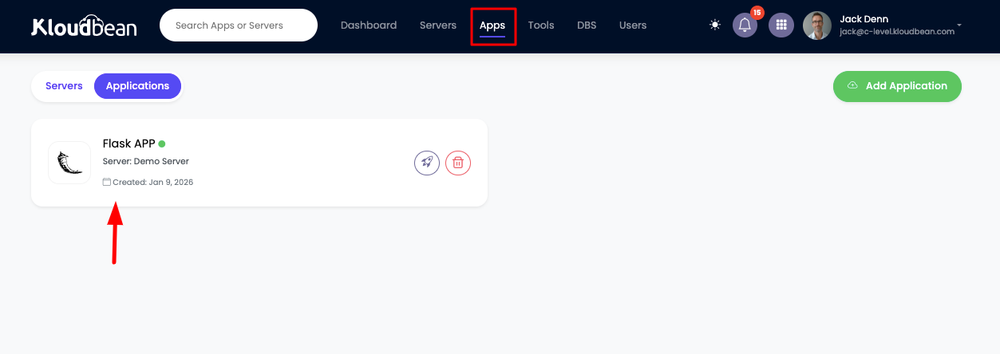
2. Name your application and server3. Launch; the server and flask stack provision in minutes
lead (used for passing mentions): flask_launch_step_1
synthetic (1 image)
flask · env-vars
real sequence (1)
flask · env-vars
1. Open the Environment Variables editor in the console
lead (used for passing mentions): flask_env_step_1
fastapi
synthetic (1 image)
fastapi · add-server
real sequence (3)
fastapi · add-server
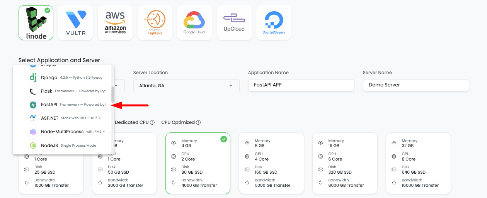
1. Select cloud, choose the fastapi application, datacenter, and size
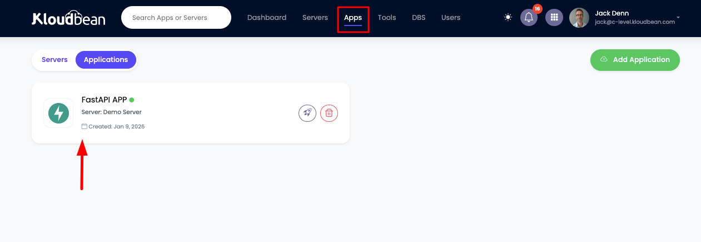
2. Name your application and server
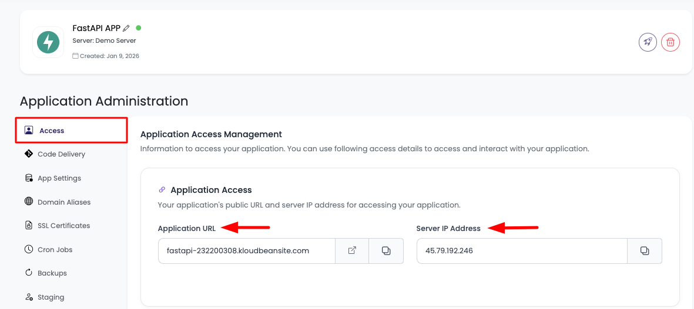
3. Launch; the server and fastapi stack provision in minutes
lead (used for passing mentions): fastapi_launch_step_1
synthetic (1 image)
fastapi · env-vars
real sequence (1)
fastapi · env-vars
1. Open the Environment Variables editor in the console
lead (used for passing mentions): fastapi_env_step_1
laravel
synthetic (1 image)
laravel · add-server
real sequence (3)
laravel · add-server
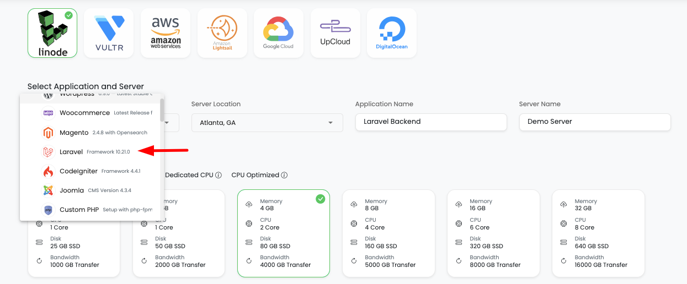
1. Select cloud, choose the laravel application, datacenter, and size2. Name your application and server
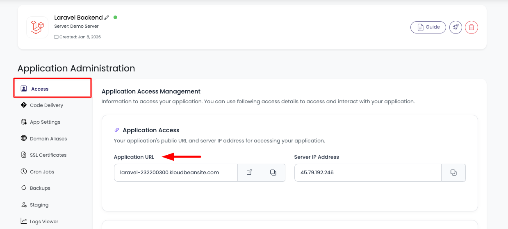
3. Launch; the server and laravel stack provision in minutes
lead (used for passing mentions): laravel_launch_step_1
react
synthetic (1 image)
react · add-server
real sequence (3)
react · add-server
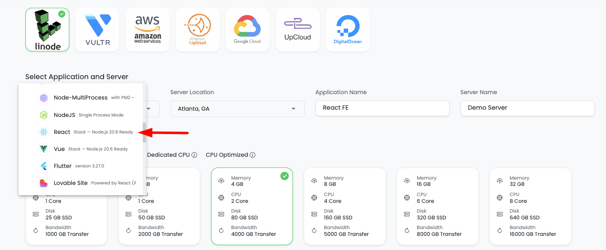
1. Select cloud, choose the react application, datacenter, and size2. Name your application and server
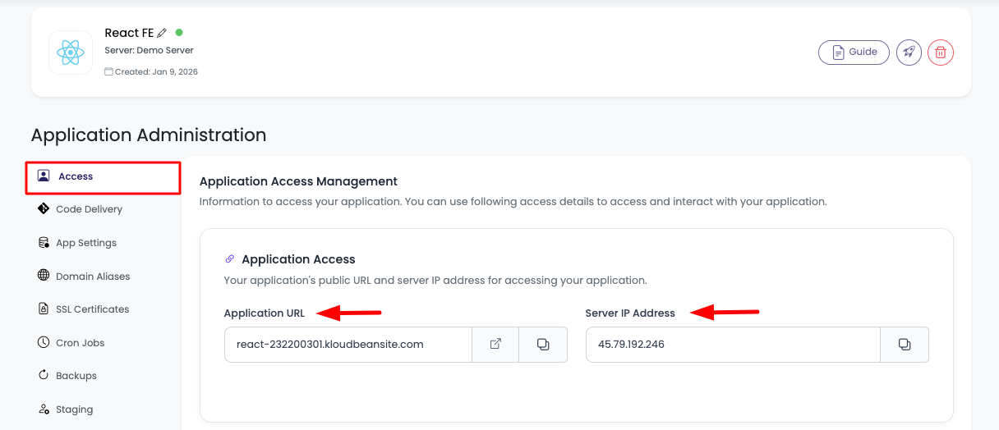
3. Launch; the server and react stack provision in minutes
lead (used for passing mentions): react_launch_step_1
vue
synthetic (1 image)
vue · add-server
real sequence (3)
vue · add-server
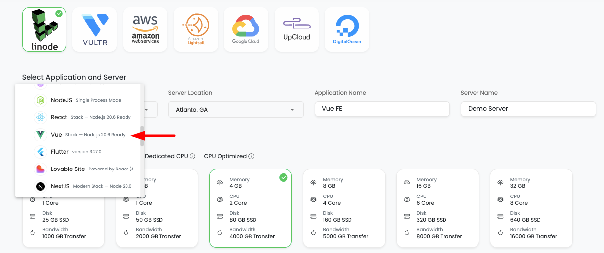
1. Select cloud, choose the vue application, datacenter, and size2. Name your application and server
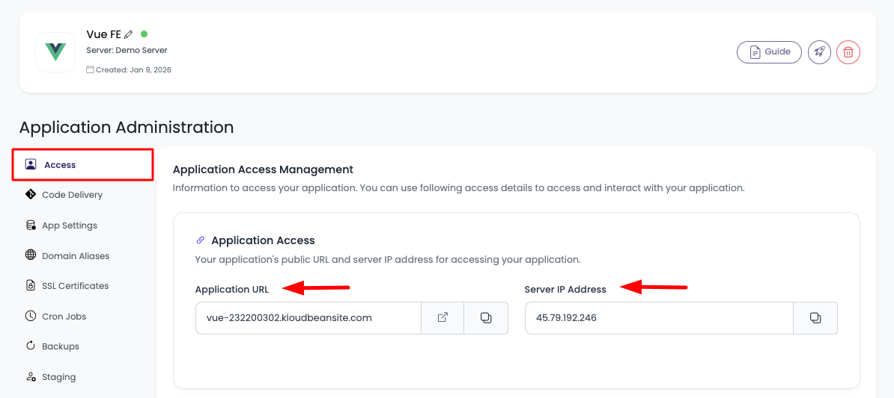
3. Launch; the server and vue stack provision in minutes
lead (used for passing mentions): vue_launch_step_1
angular
synthetic (1 image)
angular · add-server
real sequence (3)
angular · add-server
1. Select cloud, choose the angular application, datacenter, and size
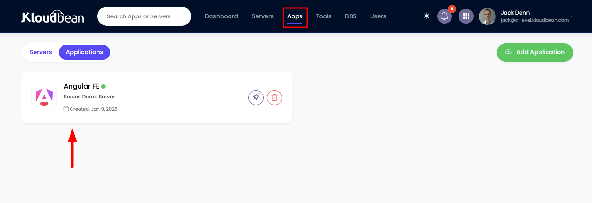
2. Name your application and server
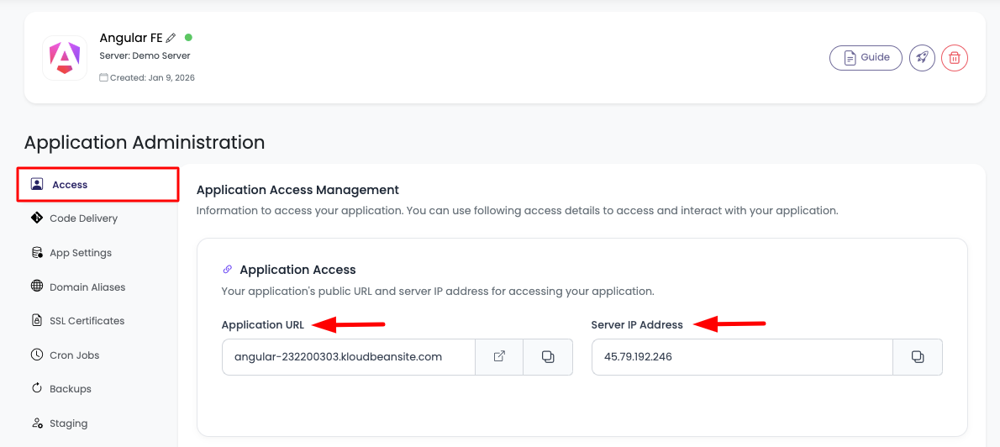
3. Launch; the server and angular stack provision in minutes
lead (used for passing mentions): angular_launch_step_1
Database-engine overrides
synthetic (1 image)
launch-database · postgres
real sequence (3)
launch-database · postgres
1. Open Managed Databases and add a new database2. Choose postgres, size, and region3. The managed postgres is created with its own host and SSL
lead (used for passing mentions): psql_launch_step_1
synthetic (1 image)
launch-database · mysql
real sequence (3)
launch-database · mysql
1. Open Managed Databases and add a new database2. Choose mysql, size, and region
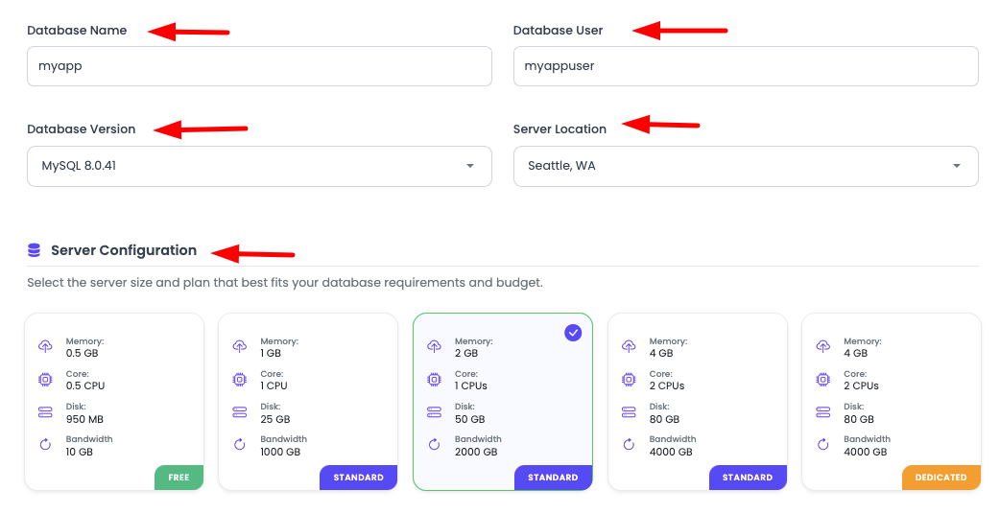
3. The managed mysql is created with its own host and SSL
lead (used for passing mentions): mysql_launch_step_1
synthetic (1 image)
launch-database · mariadb
real sequence (3)
launch-database · mariadb
1. Open Managed Databases and add a new database
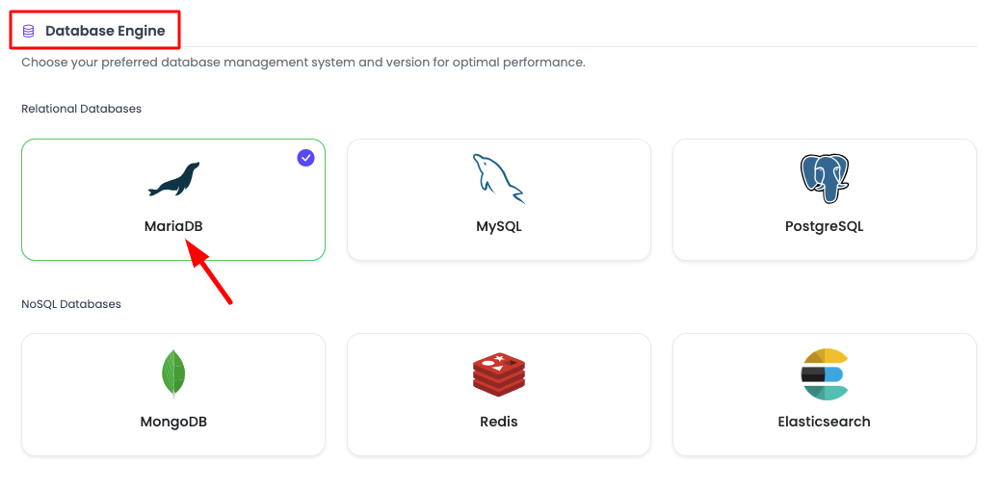
2. Choose mariadb, size, and region
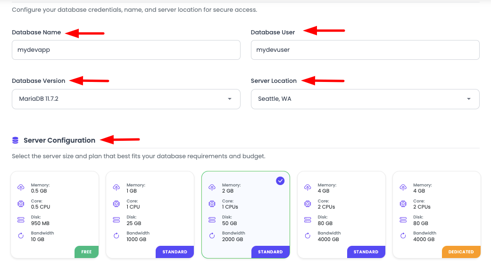
3. The managed mariadb is created with its own host and SSL
lead (used for passing mentions): mariadb_launch_step_1
synthetic (1 image)
launch-database · mongodb
real sequence (3)
launch-database · mongodb
1. Open Managed Databases and add a new database2. Choose mongodb, size, and region3. The managed mongodb is created with its own host and SSL
lead (used for passing mentions): mongodb_launch_step_1
synthetic (1 image)
launch-database · redis
real sequence (3)
launch-database · redis
1. Open Managed Databases and add a new database2. Choose redis, size, and region
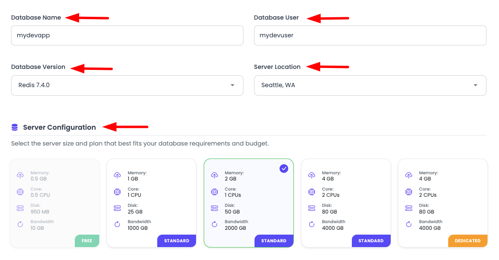
3. The managed redis is created with its own host and SSL
lead (used for passing mentions): redis_launch_step_1
synthetic (1 image)
launch-database · elasticsearch
real sequence (3)
launch-database · elasticsearch
1. Open Managed Databases and add a new database
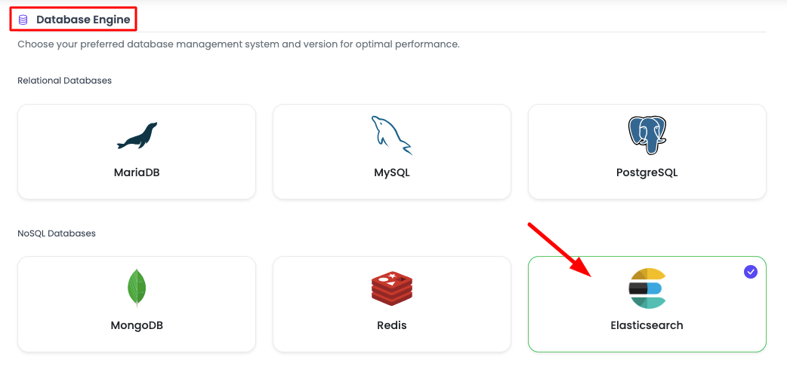
2. Choose elasticsearch, size, and region
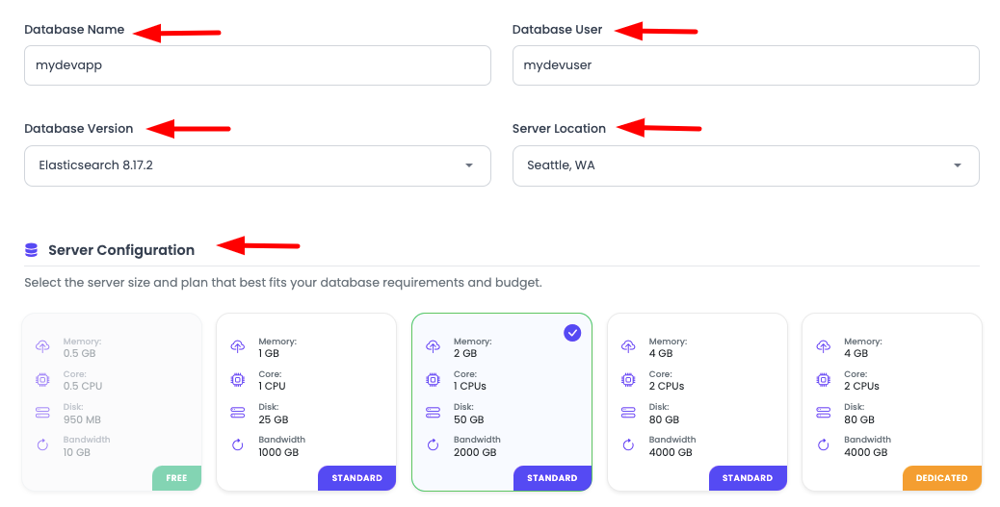
3. The managed elasticsearch is created with its own host and SSL
lead (used for passing mentions): es_launch_step_1